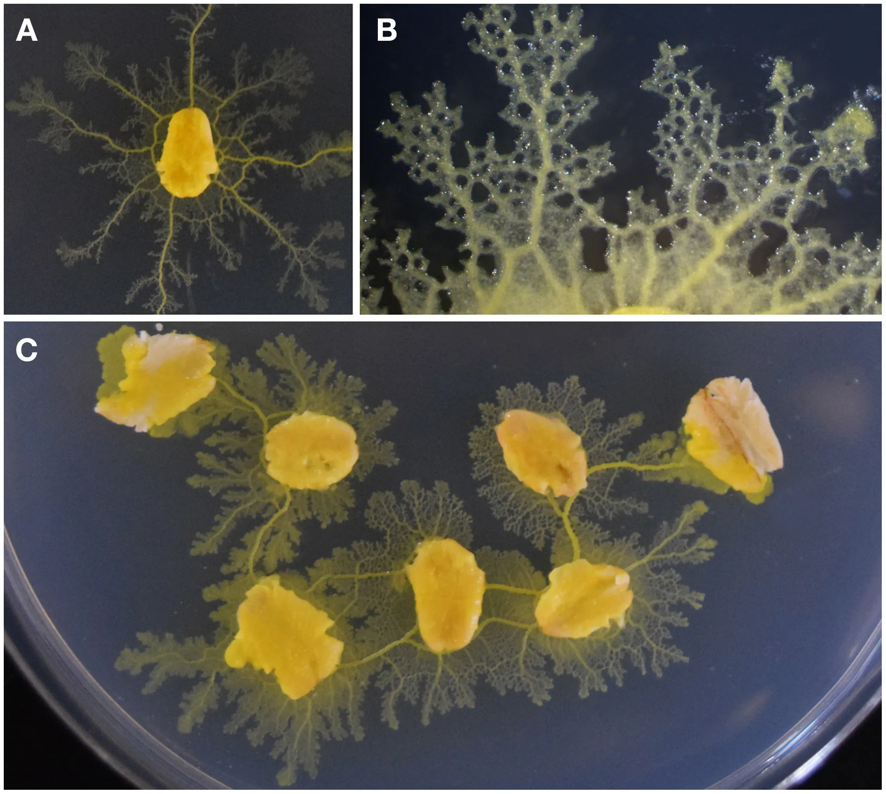

前号まで連続でマイケル・レヴィンの集団知性の研究を辿ってきた。知性も自己も、関係から創発し、そこに司令塔も学習する主体も必要ないのである。ただ、彼の研究の多くはシミュレーション（in silico）だった。そこで今回は生きた生命（in vivo）に立ち戻ろう。粘菌である。
真正粘菌（Physarum polycephalum）の変形体は、一個の細胞でありながら数センチから時に数メートルにまで広がる。巨大で多核の、アメーバのような細胞。脳も神経もなしに、どこまで届き何に応答できるのだろうか。
地面を這って餌（バクテリアや菌）を探す変形体は二つの部分からなる。前へ探索していく扇状の薄いシート（先端）と、その後ろに広がる原形質管（Vein）が枝分かれして網になった構造だ。原形質管とは、体の中をどろりとした原形質が流れる血管のような通り道のこと。外側は硬めのゲルの壁、内側は流れるゾルでできている。

{kind=link}
この管の網が、栄養も、信号となる化学物質も、体そのものである原形質も移動させている。管の壁が縮んで中身を押し出すと、原形質は管の中を行きつ戻りつ流れ（原形質流動）、その流れが体を前へ這わせもする（移動）。流れがよく通る管は太り、あまり通らない管は細って消える。網も絶えず組み替わり、餌のある方へは太い管を伸ばし、栄養の豊かな場所では細かい網目を張り、乏しい所ではまばらに枝を伸ばす。
内部を細胞に仕切る膜はない。どこを取っても連続した一つの中身で、その管の壁はリズミカルに縮んではゆるむをくり返している。周期はおよそ１、２分。この拍を生むのは、カルシウムなどの濃度が上がっては下がる化学的なサイクルであり、体のどの一片もこうして脈打っている。仕切りがないので、隣り合う部分は互いの拍のタイミング（位相）を感じ合う。縮めば隣を押し、物質が隣へ流れるからだ。そうして歩調がすり合い、ホタルの明滅が自然と揃っていくように、中央の指揮者なしに、体を貫く収縮の波が立ち上がる。そして不思議とその流れが何かを成し遂げるのである。
例えば、迷路実験（Nakagaki et al., 2000）は有名だ。寒天の迷路の上に、変形体の小片を撒くと小片どうしは融合してまた一個体になるのだが、両端に餌を置くと、なんと二つの餌を結ぶ最短経路に一本の太い管だけを残すのである（他より約22%短い路は、毎回選ばれた）。こうした「賢さ」は、先ほどの脈打ちの結果だ。餌のある場所で局所の収縮頻度が上がり、その波が体を伝わる。管は流れに沿えば太り、逆らえば細るというフィードバックによって、最短の管が残るのである（仕組みは量子コンピューターの原理の１つである量子アニーリングにも少し似ている）。
しかし、これは知性なのか、それとも単なる物理現象なのか。レヴィンの注目したジェームズ的知性を思い出そう。系が目標を保ち、障害を回り込んで手段を見つけることこそが知性であった。粘菌の流れは、餌へ回り道を見つける。迷路実験が明らかにしたのは、脳のない身体が目標へ向けて空間的に辿り着くさまであり、まさにジェームズ的知性であるといえるだろう。あまりにシンプルなので「解いている」と呼ぶのをためらうほどである。
粘菌は記憶もする。例えば、餌のある場所が管の壁をやわらかくする物質を出し、そこに至る管は太くなる。餌のあった方向・場所が、体の「管の太さの配置」そのものに刻まれているといえそうだ（Kramar and Alim, 2021）。さらには、自らの這った軌跡も記憶となる。現に、変形体は這った跡に粘液を残すのだが、その粘液は今度は避ける対象となる。実験ではY字迷路の片方にだけ自身の粘液を敷き、両端に同じ餌を置いたところ、40個体中39個体が粘液のない側を選んだ（Reid et al., 2012）。こうした「記憶」は探索能力に役立つ。大きく迂回しないと餌にたどりつかない（餌の匂いに直線で向かうとU字トラップに引っかかる）実験では、自分の跡を頼りにできるとき96%が餌に達し、地面全体を粘液で覆って跡がそもそも識別できない状態だと33%しか餌に辿り付かないことが確認されている。
ただ跡を無差別に避けているのではない。粘液には、そこを通った個体の化学物質が残されていて、粘菌はそれを感じて応答する。よく食べた個体の跡には引き寄せられ、飢えた個体の跡は避ける（Briard et al., 2020）。もはやこれを体の外側に置かれる自分（や仲間）の残した「記憶」だと呼んでも差し支えないだろう。
最後に、粘菌は学習する。前号の最後で約束した「慣れ」はその１つだ。Boisseau et al.(2016) は、二つの餌場をつなぐ寒天の橋に、無害な忌避物質（キニーネやカフェイン）を仕込んで渡らせた。粘菌は、こうした忌避物質の橋の上では広がりが鈍り流れが滞るのだが、毎日くり返すうちに、その滞りはほどけ広がりも速さも戻っていく（慣れ）。これは疲れているのではない。刺激を数日止めれば反応は戻り（自発的回復）、別の忌避物質には一から反応する（刺激特異性）。つまり、神経がないのにも関わらず、しっかり学習をしているのである。
例えば、この学習の１つの経路として、原形質管の網の形が挙げられる（Yoneoka and Takamatsu, 2023）。上記の忌避物質を渡ることを繰り返した粘菌において、原形質管（Vein）の網が、進行方向に沿った一方向の「木」から多方向に絡む「網目」へと組み替わっていた。つまり網の形（と向き）という「形」も学習後の記憶として作用しうるということだ。その証拠に、慣れたあとにその網目をわざと切って崩す、あるいは向きを回すると、慣れは消え、また忌避物質を前に足踏みをするようになる。
他にも学習の経路として、化学物質が挙げられる。塩も粘菌の忌避物質なのだが、これに慣れた個体はその塩を取り込んでいることが確認された（訓練を一切せず、素朴な個体に塩を吸わせるだけでも慣れが生じる）（Boussard et al., 2019）。逆に塩が溜まりすぎれば逆にもっと避ける（感作する）ようになることも知られている（Smith-Ferguson et al., 2022）。
一般に「解く」「覚える」「学ぶ」と言ったときには、「考える」主体がいることを前提にしてしまうが、粘菌のこうした例を追うことで、それが思い込みに過ぎないことに気付かされる。どのケースでも、こうした現象が物質の流れや関係性の中から生じているからだ。同時に、粘菌は個と集団の境目をも曖昧にする。「一個」の細胞は、無数の核と、互いに位相を伝え合う無数の振動子でできている。一でありながら多。集団知性を追うわれわれは、この小さな親戚から実に多くを学べるのではないだろうか。
プロジェクトにおいて「人が考えて解決する」というイメージはどこまでも付き纏う。だが実際は、記憶も、学習も、中心となる司令塔なしに、関係から立ち上がりうるのではなかろうか。チームの知性は、関係の配置に、共有された環境に、残された跡（記録・道具）に、そして体の形に刻まれた通り道に、宿りうるのだ。前号で「何か」が学習するのではないというレヴィンの結論を追ったが、今回は粘菌の振る舞いから（in vivo）それを確認することができたのではないだろうか。
さて、真正粘菌は切れば二つになり近づければまた一つに戻る。分かれても融け合っても、もとは一続きの同じ体である。そこで次回は、対照的に、ばらばらに暮らす単細胞アメーバが、飢えると集まって一つの体になるという細胞性粘菌 Dictyostelium を追ってみたい。別々の個（多）が、なぜ一つになるのか。それを追うことで、集団知性が何をもたらし、何のためにあるのかヒントが得られるかもしれない。